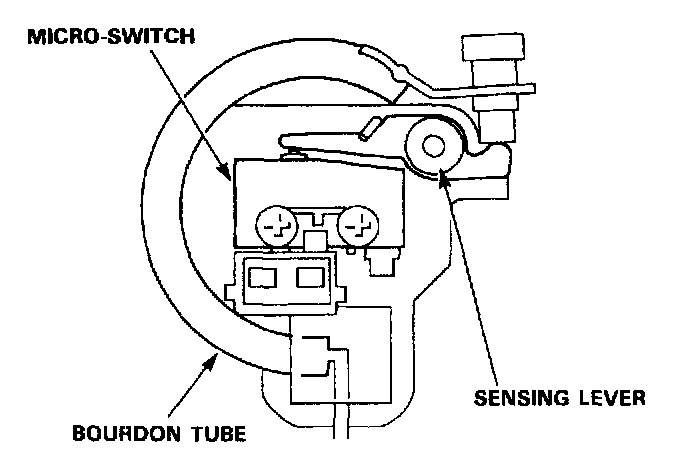

Brake Fluid Pressure Sensor/Switch: Description and Operation

Pressure switch
The pressure switch monitors the pressure accumulation in the accumulator. When the pressure in the accumulator rises, the Bourdon tube in the pressure switch deforms outward, which in turn activates the micro-switch by the force of the spring attached to the sensing lever. When the pressure in the accumulator drops due to ABS operation, the Bourdon tube moves in the opposite direction, and the micro-switch is eventually turned off.
The ABS control unit detects the fluid pressure in the accumulator by the ON/OFF signals from the pressure switch.